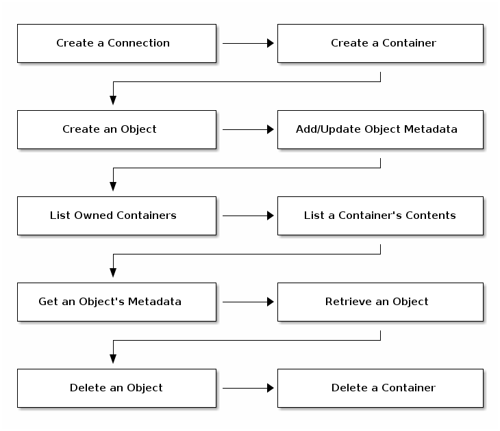

Tutorial¶
The Swift-compatible API tutorials follow a simple container-based object lifecycle. The first step requires you to setup a connection between your client and the RADOS Gateway server. Then, you may follow a natural container and object lifecycle, including adding and retrieving object metadata. See example code for the following languages:


Table Of Contents
- Intro to Ceph
- Installation (Quick)
- Installation (Manual)
- Ceph Storage Cluster
- Ceph Filesystem
- Ceph Block Device
- Ceph Object Gateway
- API Documentation
- Architecture
- Development
- Release Notes
- Ceph Releases
- Glossary